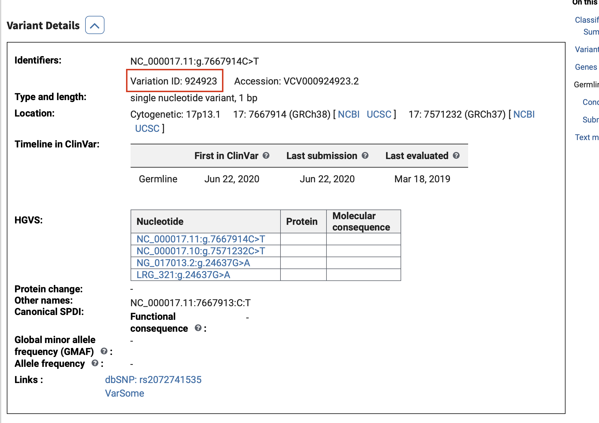
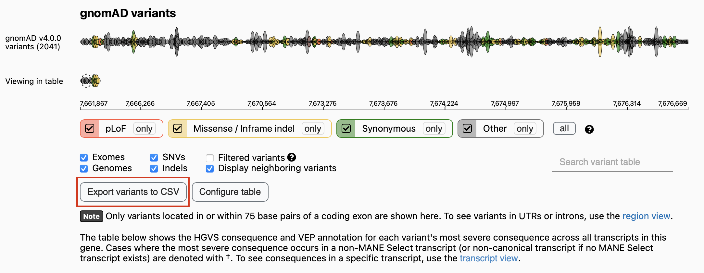

Quick Start#
{kind=link}
Installation#
pip install h2m-0.1.21-py3-none-any.whl
Importing packages#
import h2m
import pandas as pd
Loading data#
We should upload reference genome and GENCODE annotation data for both human and mouse, which could be directly downloaded from a public
Dropbox link (Gencode and Refgenome fold respectively).
Both GRCh37 and GRCh38 human reference genome assemblys are available. Upload the one that you are going to use.
# download from dropbox
path_h_ref, path_m_ref = '.../GCF_000001405.25_GRCh37.p13_genomic.fna.gz', '.../GCF_000001635.27_GRCm39_genomic.fna.gz'
records_h, index_list_h = h2m.genome_loader(path_h_ref)
records_m, index_list_m = h2m.genome_loader(path_m_ref)
path_h_anno, path_m_anno = '.../gencode_v19_GRCh37.db', '.../gencode_vm33_GRCm39.db'
db_h, db_m = h2m.anno_loader(path_h_anno), h2m.anno_loader(path_m_anno)
Query mouse orthologous genes#
query_result = h2m.query('TP53')
Query human gene: TP53;
Mouse ortholog(s): Trp53;
Homology type: one2one;
Sequence Simalarity(%):77.3537.
h2m.query('TPT1P6')
Class 7: The query human gene: TPT1P6 has no mouse ortholog.
Except for gene names, both ENSEMBL gene id and transcript id are accepted to identify a human gene. You can use the ty parameter (‘tx_id’,’gene_id’ or ‘name’) to specify your input type, but this is totally optional.
Using gene id:
query_result = h2m.query('ENSG00000141510')
Query human gene: TP53;
Mouse ortholog(s): Trp53;
Homology type: one2one;
Sequence Simalarity(%):77.3537.
Using transcript id. Should include a db annotation file with the same ref genome version.
query_result = h2m.query('ENST00000269305.4', db=db_h, ty='tx_id')
Query human gene: TP53;
Mouse ortholog(s): Trp53;
Homology type: one2one;
Sequence Simalarity(%):77.3537.
The query result of all human genes, as well as corresponding transcript IDs, is also available as a csv file.
Get transcript ID (Internet connection needed)#
One gene may have different transcripts. For mutation modeling, it is important to specify one transcript. If you do not have this information in hand, you can use H2M to get it.
Again, both gene IDs and gene names are accepted as identificaitons for human and mouse genes.
list_tx_id_h = h2m.get_tx_id('TP53', 'h', ver=37)
Genome assembly: GRCh37;
The canonical transcript is: ENST00000269305.4;
You can choose from the 17 transcripts below for further analysis:
(1)ENST00000269305.4 (2)ENST00000413465.2 (3)ENST00000359597.4 (4)ENST00000504290.1 (5)ENST00000510385.1 (6)ENST00000504937.1 (7)ENST00000455263.2 (8)ENST00000420246.2 (9)ENST00000445888.2 (10)ENST00000576024.1 (11)ENST00000509690.1 (12)ENST00000514944.1 (13)ENST00000574684.1 (14)ENST00000505014.1 (15)ENST00000508793.1 (16)ENST00000604348.1 (17)ENST00000503591.1
list_tx_id_m = h2m.get_tx_id('ENSMUSG00000059552', 'm')
Genome assembly: GRCm39;
The canonical transcript is: ENSMUST00000108658.10;
You can choose from the 6 transcripts below for further analysis:
(1)ENSMUST00000108658.10 (2)ENSMUST00000171247.8 (3)ENSMUST00000005371.12 (4)ENSMUST00000147512.2 (5)ENSMUST00000108657.4 (6)ENSMUST00000130540.2
Modeling human variants in the mouse genome#
Input#
Now you can use H2M to model your human mutations of interest.
You should have at least such information in hand:
transcript id of the human gene
transcript id of the mouse gene
start location of human variants on the chromosome
end location of human variants on the chromosome
the reference and alternative sequence on the positive strand of the chromosome
mutation type (str in [‘SNP’,’DNP’,’ONP’,’INS’,’DEL’])
the version number of human ref genome
Usually, such information has been pretty well organized in different databases and is easy to get.
Usage#
Taking TP53 R273H (ENST00000269305.4:c.818G>A) as an example.
tx_id_h, tx_id_m = list_tx_id_h[3], list_tx_id_m[3]
# use the canonical transcript
model_result = h2m.model(records_h,index_list_h, records_m, index_list_m, db_h, db_m, tx_id_h, tx_id_m, 7577120, 7577120, 'C','T', ty_h = 'SNP', ver = 37)
pd.DataFrame(model_result)
Flanked size is a parameter that controls how many amino acids (or neucleotides, for non-coding mutations) are included on both sides of the mutated region. You can change that by parameter flank_size.
model_result = h2m.model(records_h,index_list_h, records_m, index_list_m, db_h, db_m, tx_id_h, tx_id_m, 7572932, 7572932, 'C','A', ty_h = 'SNP', ver = 37, flank_size=1)
With the flank size of 1 (which means 3 amino acids are taken into consideration in totall), this mutation can be originally modeled.
Alternative modeling#
Sometimes the human mutation cannot be originally modeled in the mouse genome by using the same neucleotide alteration. Under this circumsatance, some alternative modeling strategies may be found by searching the codon list of the target amino acids. Taking TP53 R249_T253delinsS as an example.
model_result = h2m.model(records_h,index_list_h, records_m, index_list_m, db_h, db_m, tx_id_h, tx_id_m, 7577523, 7577534, 'GTGAGGATGGGC', '-', ty_h = 'DEL', ver = 37)
The default maximum number of output alternatives is 5. You can definitly change that by the parameter max_alternative.
model_result_long = h2m.model(records_h,index_list_h, records_m, index_list_m, db_h, db_m, tx_id_h, tx_id_m, 7577523, 7577534, 'GTGAGGATGGGC', '-', ty_h = 'DEL', ver = 37, max_alternative=10)
len(model_result), len(model_result_long)
(5, 6)
If you do not want to alternatively model variants, you can set search_alternatve to False.
model_result = h2m.model(records_h,index_list_h, records_m, index_list_m, db_h, db_m, tx_id_h, tx_id_m, 7577523, 7577534, 'GTGAGGATGGGC', '-', ty_h = 'DEL', ver = 37, search_alternative= False)
model_result[0]['statement']
'Class 6: This mutation cannot be originally modeled and is awaiting alternative.'
Original modeling with uncertain effects#
For frame-shifting mutations and mutations in the non-coding region, we cannot find such alternative modeling strategies with the same protein change effects. H2M will only offer the original modeling and its effect.
Example: TP53 C275Lfs*31
model_result = h2m.model(records_h,index_list_h, records_m, index_list_m, db_h, db_m, tx_id_h, tx_id_m, 7577115, 7577116, '','A', ty_h = 'INS', ver = 37)
p_h, p_m = model_result[0]['HGVSp_h'], model_result[0]['HGVSp_m']
print(f'HGVSp_h: {p_h}, HGVSp_m: {p_m}')
HGVSp_h: C275Lfs*31, HGVSp_m: C272Lfs*24
Additional function 1: modeling for base editing#
When you set param = ‘BE’, you will get modeling results that can be modeled by base editing (A->G, G->A, C->T, T->C, AA->GG, …etc.). If one mutation can be originally modeled in the mouse genome but not in a BE style, alternative BE modeling strategies will be returned too.
Taking KEAP1 F221L as an example.
tx_id_h_2, tx_id_m_2 = h2m.get_tx_id('KEAP1','h',ver=37, show=False)[3], h2m.get_tx_id('Keap1','m', show=False)[3]
model_result = h2m.model(records_h,index_list_h, records_m, index_list_m, db_h, db_m, tx_id_h_2, tx_id_m_2, 10602915, 10602915, 'G','T', ty_h = 'SNP', ver = 37, param='BE')
pd.DataFrame(model_result)
Additional function 2: modeling by amino acid change input#
Set coor = ‘aa’ and modeling human variants by amino acid change input. Use TP53 R175H as an example.
model_result = h2m.model(records_h,index_list_h, records_m, index_list_m, db_h, db_m, tx_id_h, tx_id_m, 175, 175, 'R', 'H', coor = 'aa', ty_h = 'SNP', ver = 37)
Batch Processing#
Input format#
For input in a batch processing style, you need to build a pandas dataframe with columns as the following example:
# download from dropbox
df_sample = pd.read_csv('input/sample_data.csv')

This can be achieved simply by using h2m built-in functions. The sample data used in this section can be found here.
Read from cBioPortal#
In this format, users simply provide a set of variants with their genome coordinates and reference and alternate alleles, as well as the variant type. This format is compatible with all of the datasets in the cBioPortal, as well as AACR-GENIE. Download the txt mutation data file from such public dataset and then load it as follows:
path_aacr = '/Users/gorkordkx/Desktop/Flab - Drylab/Database/AACR-GENIE/v13.1/data_mutations_extended.txt'
df = h2m.cbio_reader(path_aacr)
Read from ClinVar#
download a ClinVar vcf.gz file, and choose your desired Variation IDs that you wish to model. These vcf.gz files are available in the Reference Files Dropbox Link (under the clinvar folder) or the more up to date files can be accessed here.
{kind=link}
filepath = '/Users/gorkordkx/Desktop/GRCh37_clinvar_20240206.vcf.gz'
variation_ids = [925574, 925434, 926695, 925707, 325626, 1191613, 308061, 361149, 1205375, 208043]
df = h2m.clinvar_reader(filepath, variation_ids)
Read from GenomAD#
Search a specific gene in GenomAD browser, and download the conluson csv.
{kind=link}
df = h2m.genomad_reader('/Users/gorkordkx/Downloads/gnomAD_v4.0.0_ENSG00000141510_2024_02_07_11_36_03.csv','TP53')
Get canonical transcript ID of human genes if needed, no internet connection needed#
df = h2m.get_tx_batch(df,species='h',ver=37)[0]
Get canonical transcript ID of mouse genes, no internet connection needed#
df = h2m.get_tx_batch(df, species='m')[0]
Batch modeling#
result = h2m.model_batch(df, records_h, index_list_h, records_m, index_list_m, db_h, db_m, 37)
Result visualization#
model_result = h2m.model(records_h,index_list_h, records_m, index_list_m, db_h, db_m, tx_id_h, tx_id_m, 7577120, 7577120, 'C','T', ty_h = 'SNP', ver = 37, show_sequence=True)
h2m.model_batch(df, records_h, index_list_h, records_m, index_list_m, db_h, db_m, 37)
{kind=link}